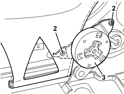

7045A36 DRIVER'S SEAT MANUAL HEIGHT ADJUSTMENT DEVICE - R.R
- Path
- Procedures > 70 FITTINGS > 7045 FRONT SEATS > 7045A FRONT SEAT ASSEMBLY > 7045A36 DRIVER'S SEAT MANUAL HEIGHT ADJUSTMENT DEVICE - R.R
- Kind
- repair procedure (removal / refitting; the operation number is the code)
- Applies to
- all engines; all production periods
- Interactive page
- https://sloeber94.github.io/elrnDB/alfa/159/en/#/939011292
Applies to: all engines; all production periods
 Removing
Removing
 Refitting
RefittingOp. 7045A24 FRONT SEAT BACKREST ANGLE ADJUSTMENT KNOB (ONE), LEFT OR RIGHT - R.R.
Op. 7045A56 DRIVER'S SEAT HEIGHT ADJUSTMENT DEVICE CONTROL LEVER - R.R
Op. 7045A43 FRONT SEAT EXTERIOR GUARD (ONE), LEFT OR RIGHT - R.R
1. Release the cushion trim retainer.
2. Undo the bolts.
3. Remove the height adjustment device by releasing it from the splined shaft to which it is fitted.

Applies to: all engines; all production periods
Refitting
Removing- Check that the height adjustment device is not damaged.
- Position the height adjustment device by fitting to the splined shaft.
- Tighten the bolts.
- Do up the cushion trim retainer.
Op. 7045A43 FRONT SEAT EXTERIOR GUARD (ONE), LEFT OR RIGHT - R.R
Op. 7045A24 FRONT SEAT BACKREST ANGLE ADJUSTMENT KNOB (ONE), LEFT OR RIGHT - R.R.
Op. 7045A56 DRIVER'S SEAT HEIGHT ADJUSTMENT DEVICE CONTROL LEVER - R.R
Topics linked from this page (3)
- 7045A24 FRONT SEAT BACKREST ANGLE ADJUSTMENT KNOB (ONE), LEFT OR RIGHT - R.R.
- 7045A43 FRONT SEAT EXTERIOR GUARD (ONE), LEFT OR RIGHT - R.R
- 7045A56 DRIVER'S SEAT HEIGHT ADJUSTMENT DEVICE CONTROL LEVER - R.R